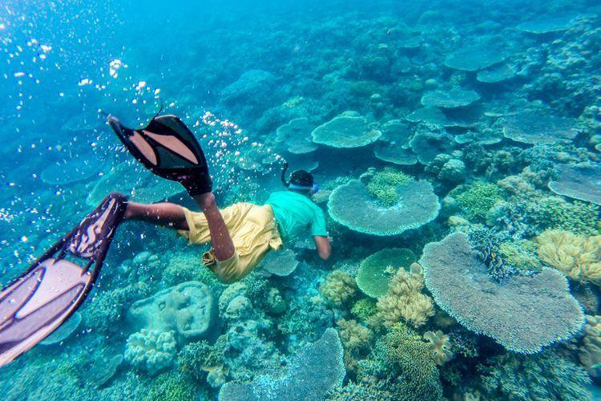
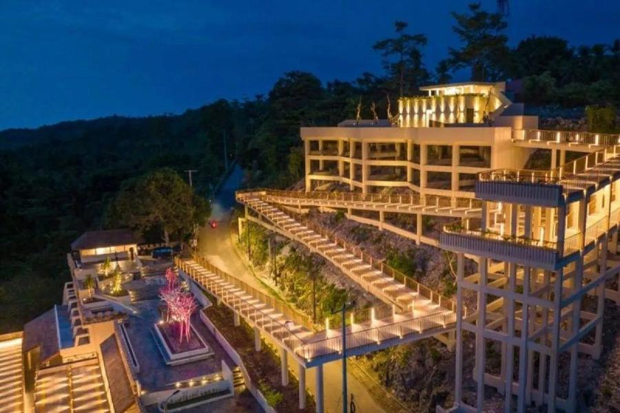
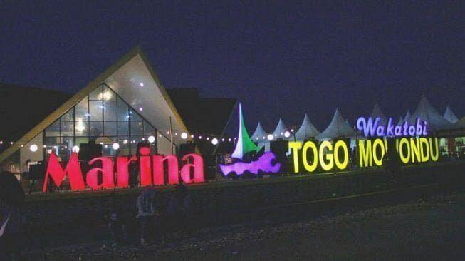
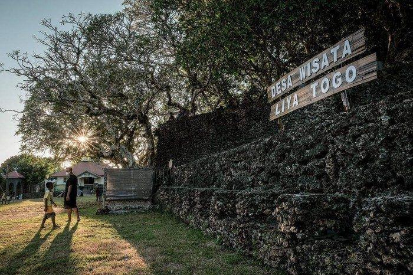
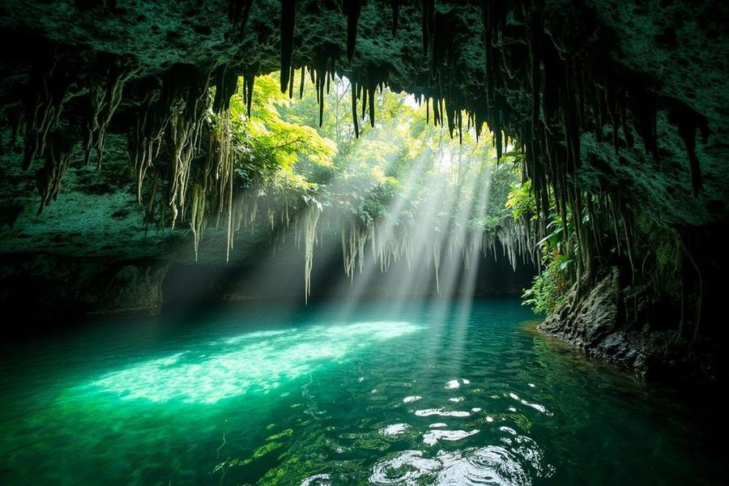
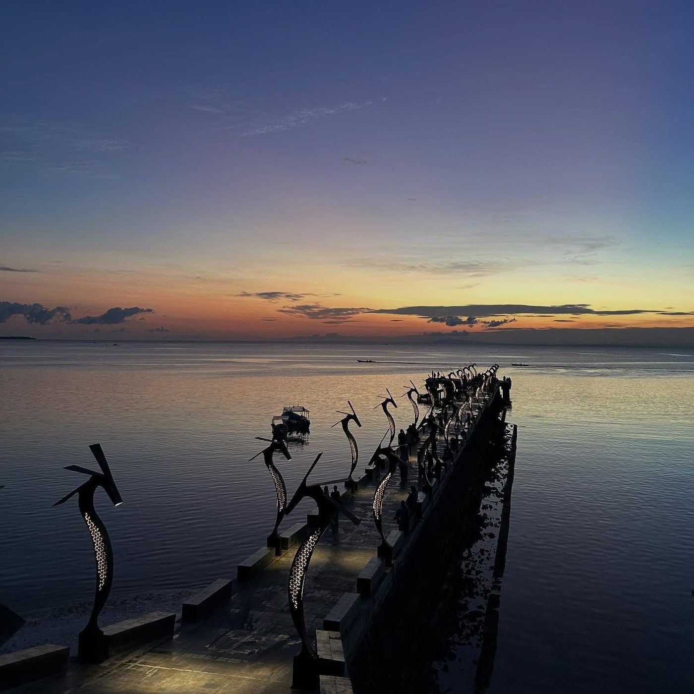

Tentang Wangi-Wangi
Wangi-Wangi adalah pulau terbesar dan pusat administrasi Kabupaten Wakatobi. Pulau ini menjadi pintu masuk utama bagi wisatawan yang datang melalui Bandara Matahora. Nama "Wangi-Wangi" konon berasal dari harumnya bunga cengkeh dan pala yang tumbuh subur di pulau ini.
Selain sebagai pusat pemerintahan, Wangi-Wangi menawarkan keindahan alam yang memukau, mulai dari pantai berpasir putih hingga spot snorkeling yang mudah diakses.
Destinasi Unggulan

Dermaga Sombu
Dermaga Sombu (Sombu Jetty), yang terletak di Desa Sombu, Wanci, adalah salah satu landmark wisata bahari di Pulau Wangi-Wangi. Dermaga kayu yang panjang dan estetik ini menjorok ke perairan jernih, menjadikannya lokasi yang sangat populer untuk berfoto, terutama saat momen matahari terbenam.
Lebih dari sekadar jembatan biasa, Dermaga Sombu berfungsi sebagai gerbang entry langsung menuju dive site yang terkenal dan mudah diakses, bahkan untuk pemula. Berjalan di atasnya sudah menyajikan pemandangan air laut tosca yang tenang dan mengundang.
Perairan di bawah dan sekitar Dermaga Sombu dikenal sebagai bagian dari keindahan Taman Nasional Wakatobi, menawarkan kekayaan terumbu karang dan biota laut yang memukau untuk kegiatan snorkeling dan diving. Lokasi ini dikenal sebagai Sombu Dive, ditandai dengan adanya patung Ikan Napoleon di dekatnya.

Puncak Toliamba
Panorama Laut dan Pulau: Dari ketinggian Toliamba, pengunjung dapat menikmati hamparan lautan biru yang luas berpadu dengan hijaunya pepohonan. Pada hari yang cerah, Anda dapat melihat pemandangan indah pulau-pulau di sekitar Kepulauan Wakatobi, bahkan konon hingga Pulau Buton.
Spot Matahari Terbenam (Sunset): Tempat ini disebut-sebut sebagai salah satu lokasi terbaik di Wanci untuk menyaksikan momen sunset yang sangat menawan, di mana cahaya keemasan memancar di atas lautan.
Lanskap Asri: Area Puncak Toliamba dikelilingi oleh pepohonan yang rindang dan alam yang masih asri, menciptakan suasana yang sejuk, tenang, dan damai, menjadikannya tempat favorit untuk bersantai atau sekadar nongkrong bagi muda-mudi dan keluarga.

Marina Togo Mowondu (Bypass Marina)
Di Wanci, area yang paling terkenal dengan nama "Marina" dikenal sebagai Marina Togo Mowondu atau sering juga disebut Bypass Marina. Lokasi ini merupakan destinasi wisata tepi laut yang sangat populer, bahkan bisa disebut sebagai pusat keramaian dan tempat berkumpulnya masyarakat lokal maupun wisatawan.
Secara ringkas, Marina Togo Mowondu bukan hanya sekadar pelabuhan kecil (marina), tetapi telah berkembang menjadi taman kota tepi laut yang menjadi jantung kehidupan sosial, kuliner, dan rekreasi di Pulau Wangi-Wangi.

Benteng Liya Togo
Benteng Liya Togo adalah salah satu situs sejarah dan budaya terpenting di Pulau Wangi-Wangi (Wanci), Wakatobi, yang terletak di Desa Liya Togo. Dibangun sekitar tahun 1200-an Masehi, benteng ini merupakan peninggalan dari masa kekuasaan Kesultanan Buton, berfungsi sebagai pusat pertahanan, pemerintahan, dan syiar Islam di wilayah tersebut.
Struktur benteng ini dikenal memiliki arsitektur pertahanan yang kompleks dengan tiga lapis perlindungan, didirikan di atas ketinggian yang strategis sehingga selain memiliki nilai historis, ia juga menawarkan pemandangan indah ke arah laut dan perkampungan di sekitarnya.
Di dalam area Benteng Liya Togo, terdapat dua peninggalan vital. Yang pertama adalah Masjid Mubarak, yang diperkirakan dibangun pada tahun 1546 dan diyakini sebagai salah satu masjid tertua di Sulawesi Tenggara, menjadi simbol penting penyebaran agama Islam di Wakatobi. Selain itu, terdapat pula Baruga (rumah adat) dan sejumlah Lawa (pintu gerbang atau pos jaga), yang semuanya mencerminkan kekayaan budaya dan sistem sosial masyarakat masa lalu.

Goa Kontamale
Permandian Kontamale (atau sering disebut Goa Kontamale) adalah salah satu objek wisata yang sangat terkenal di Wanci (Pulau Wangi-Wangi), Wakatobi, Sulawesi Tenggara. Ini adalah pemandian umum alami yang menawarkan pengalaman unik dengan air jernih dari mata air dalam gua.
Goa Kontamale juga menyimpan sebuah mitos yang dipercaya oleh warga setempat, yaitu mata air di goa ini dipercaya dapat mempermudah jodoh bagi mereka yang masih lajang atau yang mengalami kesulitan dalam hubungan percintaan (sulit menikah). Mitos ini konon berasal dari kisah sepasang kekasih di masa lalu yang akhirnya menikah setelah mandi di goa tersebut.
Secara keseluruhan, Permandian Kontamale adalah tempat yang tepat bagi Anda yang mencari ketenangan dan ingin menikmati kesegaran air alami di tengah keindahan alam goa yang eksotis di Wanci.

Dermaga Sombu Sunset
Suasana Dermaga Sombu paling dramatis terjadi pada jam-jam menuju matahari terbenam, ketika langit berubah warna menjadi gradasi jingga, ungu, dan biru tua di atas laut tosca yang tenang.
Spot ini menjadi favorit fotografer sekaligus tempat palingycin untuk menikmati angin laut sore sambil menunggu matahari sepenuhnya tenggelam di balik cakrawala.